Todo lo que ves abajo se hizo de verdad en tu agencia (Sinergy Education), en la subcuenta de prueba "Sinergeticos LLC Prueba Llamada". El agente "Recepcionista Clinica Sonrisa" quedó creado, con prompt en español, y respondió en vivo dos veces. Este documento no solo muestra los pasos: explica la mecánica detrás de cada pantalla — cómo funciona el motor, qué hace cada campo, cómo se cobra cada cosa y por qué el orden de los pasos importa. Es tu guión de estudio antes de grabar el módulo.
0 Hallazgos antes de empezar
Antes de tocar un solo botón hay tres piezas de contexto que cambian la economía y la urgencia de tu módulo. Las tres salieron de navegar tu cuenta hoy, no de blogs de terceros.
Summer of AI: la ventana de oro (hasta el 31 de agosto de 2026)
HighLevel está corriendo una promoción de verano con tres componentes, y entender la mecánica de cada uno importa porque definen cuánto pagan tus alumnos durante el lanzamiento del módulo:
Gratis para todos hasta el 31 de agosto, sin activar nada: AI Studio (webs desde un prompt), Ask AI (asistente interno de la plataforma), Email AI, Workflow AI (automatizaciones descritas en lenguaje natural) y Funnel AI. Esto significa que la Clase 4 de tu módulo — procesos internos — puede grabarse y practicarse con costo cero durante el verano.
Trial de 30 días en los agentes: Conversation AI, Voice AI, Reviews AI, Content AI y el Prompt Optimizer. La letra chica que importa: el reloj de los 30 días arranca con la primera activación, no al crear la cuenta. Un alumno puede crear su cuenta hoy, construir su prompt con calma, y activar el agente justo cuando esté listo para maximizar el mes gratis. Segunda letra chica: las cuentas que ya tienen AI Employee activo o Pay-Per-Use en uso NO son elegibles al trial — aplica a cuentas "vírgenes" de IA, que es exactamente el caso de todo alumno nuevo.
Concurso de $100,000 USD para agencias: cada subcuenta que activa AI Employee da puntos (3 pts el plan Growth de $50, 6 pts el Unlimited de $97), y las agencias compiten por división de tamaño. Sinergy Education (20 subcuentas) caería en la división "Emerging" (11–50 cuentas, pool de $10,000). Es anecdótico para el módulo, pero es un dato sabroso para contar en cámara: GHL está empujando tan fuerte la IA que literalmente reparte dinero por adoptarla.
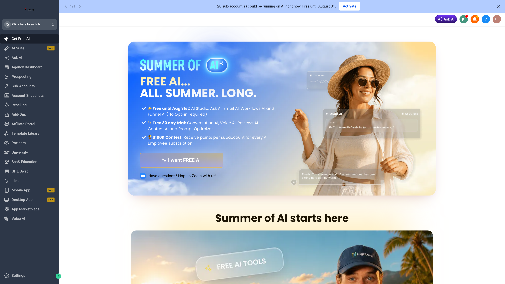
Summer of AI visto desde tu agencia: 5 herramientas gratis todo el verano, 30 días de trial en los agentes, y el concurso de $100K con su estructura de divisiones.
Ya eres afiliado de GHL (y ya te pagó $1,378 USD)
El pendiente de "darse de alta en afiliados" no existía: la cuenta Sinergy Education está inscrita desde hace ~21 meses según los mensajes del portal. Cómo funciona la mecánica del programa:
Tu link:gohighlevel.com/?fp_ref=sinergy-education13 — está en Agency View → Affiliate Portal, con botón de copiar. Cualquiera que haga clic y luego pague una suscripción queda atribuido a ti.
La comisión es 40% recurrente del plan que pague el referido, cada mes, mientras siga siendo cliente. Starter $97 → $38.80/mes. Unlimited $297 → $118.80/mes. No es un bono de una vez: es renta. Tu único referido activo actual genera exactamente $38.80/mes (un Starter), y el histórico acumulado es $1,378.25.
Pagos: mensuales, vía el portal (Tipalti — configuras método en "Payment Details"). El dashboard se actualiza cada 24 horas, así que el día del lanzamiento no esperes ver los registros en tiempo real.
La matemática del módulo: 100 alumnos que compren Starter con tu link = ~$3,880 USD/mes recurrentes. A 12 meses de retención promedio, cada alumno vale ~$465 USD adicionales al precio del curso. El link va en la Clase 0 y en los recursos descargables — sin ocultarlo: decir "es mi link de afiliado, a ti te cuesta lo mismo y a mí me apoya" genera más confianza que esconderlo.
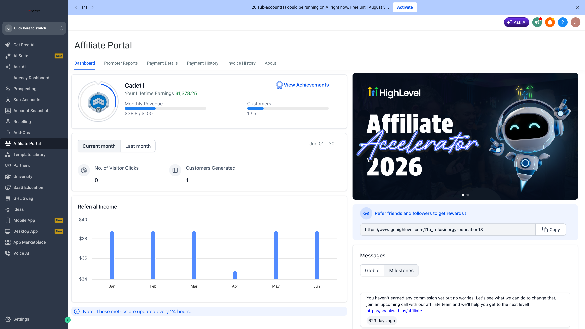
Affiliate Portal: $1,378.25 de por vida, nivel "Cadet I", 1 cliente activo generando $38.80/mes, y tu link listo para copiar. Los hitos de la derecha cuentan la historia: primer referido, primer payout, $100, $500, $1,000.
Tu agencia NO está en el plan de $497 (y para este módulo, no importa)
El banner "Upgrade to Pro plan to get access to SaaS mode" que aparece en Sub-Accounts confirma que Sinergy Education está en el plan Unlimited ($297): subcuentas ilimitadas, pero sin SaaS mode ni rebilling automático. Esto valida la decisión de diseño del módulo: cada alumno compra su propia suscripción de $97 en vez de rentarle subcuentas tuyas. Si algún día quisieras el modelo subcuentas-como-servicio, necesitarías subir a $497; con el modelo afiliado no necesitas cambiar nada.
1 La arquitectura: agencia y subcuentas
MecánicaGHL tiene dos niveles y todo lo demás cuelga de ahí. La agencia (Agency View) es el nivel administrativo: ahí viven las subcuentas, los snapshots, el portal de afiliados y la facturación. La subcuenta (o "location") es donde vive UN negocio: sus contactos, sus conversaciones, sus calendarios, sus automatizaciones y sus agentes de IA. Nada de un negocio se mezcla con otro. Cuando un alumno compra el Starter de $97, GHL le crea SU propia agencia con capacidad de hasta 3 subcuentas — o sea que el alumno vive el mismo esquema que tú, en miniatura: su "agencia" es él mismo, y su primera subcuenta es su negocio.
Para el tutorial usamos la subcuenta "Sinergeticos LLC Prueba Llamada" — una cuenta de pruebas sin tráfico real, ideal para experimentar sin riesgo. El botón "Switch to Sub-Account" es la puerta de entrada: al cruzarla, el menú lateral cambia por completo (deja de mostrar Snapshots/Afiliados y muestra Conversations, Calendars, Contacts, AI Agents...). Ese cambio de menú es la señal visual de que pasaste del nivel administrativo al nivel operativo — vale la pena señalarlo en cámara porque es donde más se pierden los novatos.
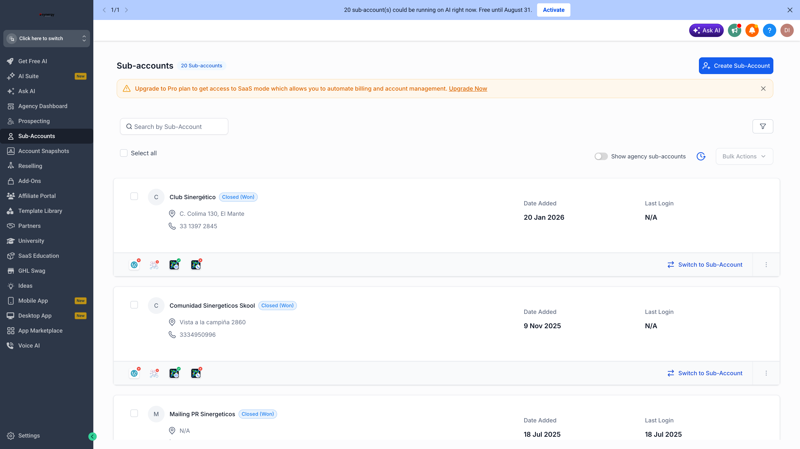
Las 20 subcuentas de la agencia. Los iconos de la derecha de cada fila indican qué servicios tiene cada una: email gestionado (LC Email), teléfono gestionado (LC Phone) y WordPress. Nota que solo 4 subcuentas tienen LC Phone activo — ese icono es el prerequisito de Voice AI.
2 La sección AI Agents: el mapa completo
Dentro de la subcuenta, el menú lateral tiene la entrada AI Agents. Al abrirla aparece una sub-navegación con 7 secciones, y conviene entender qué hace cada una porque tu módulo va a tocar 4 de ellas:
Sección
Qué es y cuándo se usa
Getting Started
Página de venta interna de GHL: los números de negocio (62% de llamadas after-hours perdidas, 78% de chats ignorados, 80% de leads perdidos en los primeros 5 minutos) y los 4 arquetipos de agente. No configura nada, pero sus cifras son munición lista para tu clase.
Voice AI
Los agentes de voz: contestan el teléfono. Clase 3 de tu módulo.
Conversation AI
Los agentes de chat: responden SMS, Instagram, Facebook, WhatsApp, webchat y Live Chat. Clases 1 y 2 de tu módulo.
Knowledge Base
Las bases de conocimiento que alimentan a los agentes (chat y voz). Hasta 15 por subcuenta.
Agent Templates
Plantillas de agentes pre-armadas del marketplace, por industria.
Content AI
Generación de contenido (posts, emails, imágenes) — parte de la Clase 4.
Agent Logs
El registro de todo lo que los agentes hicieron: cada conversación, cada acción disparada. Es donde auditas al empleado digital.
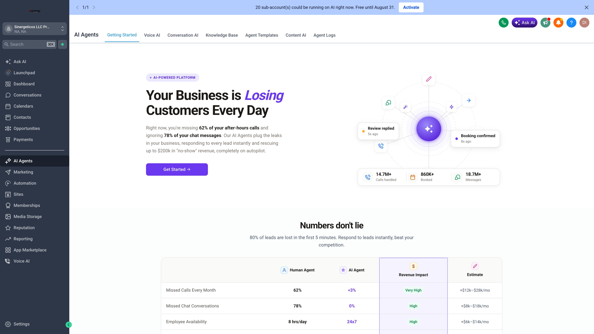
La página Getting Started: tabla comparativa humano vs agente IA con impacto en revenue estimado por renglón. Estos números (respuesta <1 seg vs ~34 min del humano; conversión 48% vs 23%) son los argumentos de venta de tu módulo, cortesía de GHL.
3 Crear el bot: las dos filosofías y los cuatro objetivos
Conversation AI → botón "Create Bot". Lo primero que aparece no es un formulario: es una decisión de filosofía, y es el momento narrativo más importante de tu Clase 1.
Mecánica: prompt vs flowUn Prompt Based Bot funciona así: cada mensaje del cliente se envía a un modelo de lenguaje (GPT 4.1) junto con tu prompt (las instrucciones), la base de conocimiento relevante y el historial de la conversación. El modelo decide qué responder y si debe ejecutar una acción (agendar, transferir, etc.). No hay árbol de decisiones: hay criterio. Un Flow Based Builder, en cambio, es el paradigma clásico de chatbot: cajitas conectadas con condiciones ("si contiene X, ir a Y"). El flow te da control absoluto pero cero flexibilidad — cualquier mensaje fuera del guión lo rompe. El prompt te da flexibilidad total a cambio de que el control se ejerce escribiendo mejores instrucciones, no dibujando más cajitas. Para tu audiencia (dueños de PyME, no ingenieros), el prompt-based es la única opción sensata, y además es la que hace que Claude sea el copiloto perfecto: escribir instrucciones es exactamente lo que Claude hace mejor.
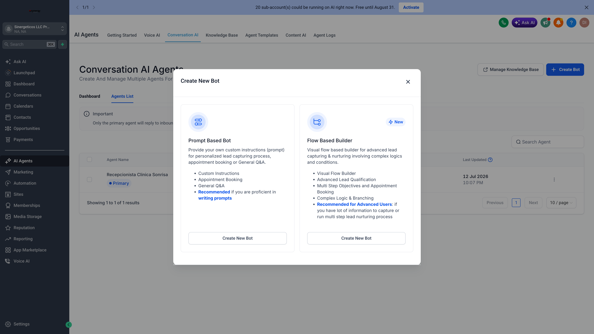
La decisión de filosofía. GHL mismo recomienda el Prompt Based Bot "si eres competente escribiendo prompts" — y tu alumno lo será, porque Claude se los escribe. El Flow Builder queda para casos avanzados de captura multi-paso.
Elegido "Prompt Based", el segundo paso pregunta el objetivo del bot. Esto no es cosmético: define qué plantilla de prompt precarga GHL y qué acción viene pre-configurada:
General Q&A — bot de preguntas frecuentes. Responde, no persigue nada. Es el que NO quieres para la promesa "vender más": un bot que solo contesta preguntas es un empleado que informa pero no cierra.
Appointment booking — el que elegimos. Viene orientado a proponer horarios y confirmar citas. Para negocios de servicios (clínicas, despachos, salones, gimnasios) la cita ES la venta, así que este objetivo convierte al bot en vendedor.
Marketplace Templates — agentes pre-armados de terceros, por industria. Útil como acelerador, pero le quita al alumno el aprendizaje del prompt.
Start from Scratch — lienzo en blanco, sin plantilla. Para cuando ya dominas el formato.
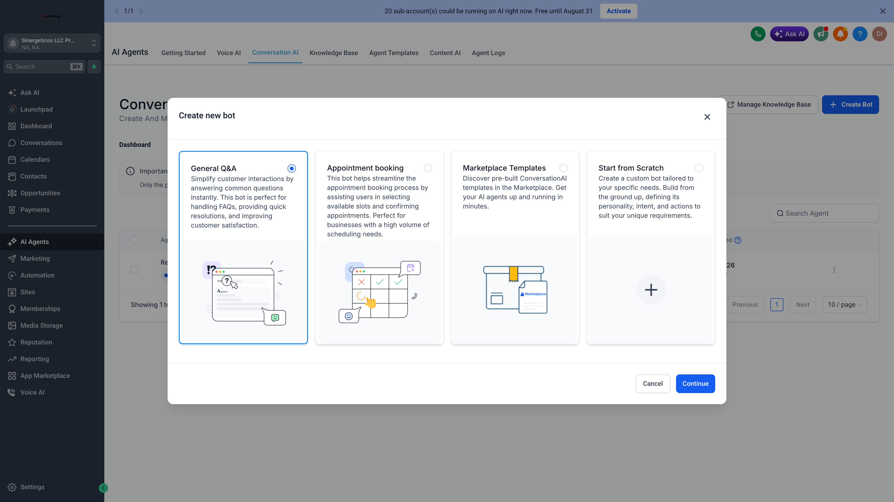
El selector de objetivo. Elegimos Appointment booking porque agenda = venta. Nota el detalle pedagógico: la diferencia entre un bot de FAQ y un bot que vende se decide aquí, antes de escribir una sola palabra de prompt.
4 Bot Settings: modos, canales y los controles finos
Creado el bot, aterrizas en Bot Settings. Esta pantalla controla el "cuándo y dónde" del agente (el "qué dice" vive en Bot Goals, sección 5). Vamos pieza por pieza:
El concepto de bot Primary
MecánicaUna subcuenta puede tener varios bots (uno de ventas, uno de soporte, uno de cobranza), pero solo el bot marcado como Primary responde a los mensajes entrantes. Los demás solo se activan si el Primary les transfiere la conversación (acción "Transfer Bot") o si un workflow los invoca. GHL lo advierte con un banner amarillo permanente. Para el alumno esto simplifica todo: su primer bot es automáticamente el Primary y no tiene que pensar en ello — pero si algún día crea un segundo bot y "no responde", esta es la razón.
Los tres modos de operación
Off — el bot existe pero no participa. Es el estado del demo ahora mismo: configurado, probado y dormido.
Suggestive — el modo entrenamiento y el más importante pedagógicamente. El bot NO envía nada al cliente: redacta su respuesta sugerida dentro de la ventana de conversación y un humano decide si la envía, la edita o la descarta. Es el modo con el que todo alumno debe operar la primera semana: le permite auditar el criterio del bot con clientes reales sin ningún riesgo, y ganar la confianza para soltarlo.
Auto Pilot — el bot responde solo, en todos los canales asignados, 24/7. El objetivo final. La transición Suggestive → Auto Pilot es un momento de decisión del dueño, no un default — y así hay que enseñarlo.
Canales: un cerebro, seis bocas
MecánicaEl bot no se configura "por canal". Se le asignan canales (SMS, Instagram, Facebook, Chat Widget, Live Chat, WhatsApp — los seis vienen pre-asignados) y escucha en todos con el mismo prompt y la misma base de conocimiento. La condición es que el canal esté conectado en la subcuenta: Instagram requiere una cuenta profesional vinculada a una página de Facebook (Settings → Integrations); WhatsApp requiere la suscripción de $10 USD/mes y la verificación de Meta Business; SMS requiere número de teléfono. Si un canal no está conectado, el bot simplemente no recibe mensajes por ahí — no da error, no se queja. Por eso la estructura de tu módulo es correcta: Clase 1 construye el cerebro con el simulador (cero canales necesarios), Clase 2 conecta las bocas.
Advanced Settings: los controles que evitan desastres
Wait time before responding (default 2 segundos): cuánto espera el bot antes de contestar. No es cosmético — la gente escribe en ráfagas ("Hola" / "una pregunta" / "¿cuánto cuesta la limpieza?"). El wait time le da margen al bot para leer la ráfaga completa y responder UNA vez a todo, en vez de contestar tres veces como metralleta. En negocios donde la gente escribe mucho por partes, subirlo a 4–5 segundos mejora la experiencia.
Maximum messages per conversation (default 75): el freno de mano. Limita cuántos mensajes puede enviar el bot en una sola conversación. Protege contra dos cosas: loops raros (un cliente troll o otro bot del otro lado) y costos descontrolados en el plan pay-per-use.
Responder a imágenes y notas de voz (toggles): el bot puede interpretar fotos y audios del cliente (solo en Auto Pilot). Un paciente manda foto de su muela, el bot la reconoce y reacciona. Tardan un poco más en procesarse.
Send bot to sleep (Manual / Workflow message): la mecánica de convivencia humano-bot. Si un humano del equipo escribe manualmente en la conversación, el bot se duerme y le cede el control — evita el escenario vergonzoso de bot y humano contestando en paralelo. Se puede configurar también para mensajes de workflow. Esta es LA respuesta a la objeción #1 del dueño de negocio ("¿y si yo quiero intervenir?"): interviene cuando quiera, el bot se aparta solo.
El pricing visible en la propia pantalla
Mecánica de cobroAbajo de Bot Settings hay una sección "Pricing" que muestra el plan actual: "Token Usage Cost" — pago por uso. Cada respuesta del bot consume tokens del modelo (el prompt + historial + respuesta) y se cobra al wallet de la cuenta; hablamos de fracciones de centavo por respuesta. El botón "Upgrade to AI Employee" ofrece los planes fijos: Growth $50 USD/mes (1,000 respuestas de chat + 100 minutos de voz incluidos) o Unlimited $97 USD/mes (chat y voz ilimitados). La regla práctica para el alumno: arranca en pay-per-use (o con el trial de 30 días del Summer of AI), y cuando el bot supere ~1,000 respuestas al mes o active la voz en serio, el plan fijo se paga solo. Importante: crear y probar el bot NO exige contratar nada — no hay paywall, solo cobro por lo que se usa.
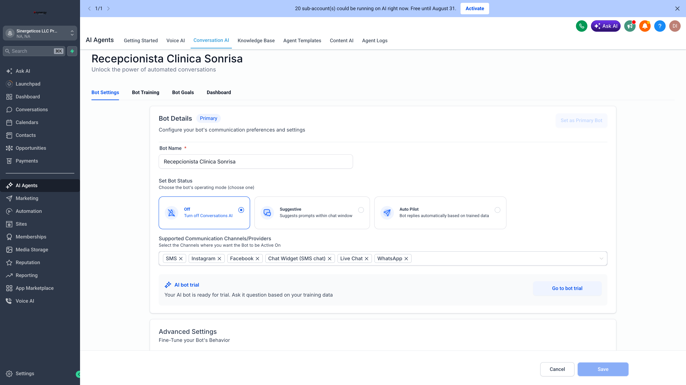
Bot Settings completo: nombre, los 3 modos, los 6 canales pre-asignados, el acceso al simulador ("Go to bot trial"), los Advanced Settings y el pricing por token al fondo. Todo el "cuándo y dónde" del agente en una pantalla.
⚠️ Trampa real que encontramos: el campo de nombre rechaza caracteres especiales. "Recepcionista Demo — Clínica Sonrisa" falló por el guion largo (—) con el error "Bot name should not contain special characters". Quedó como Recepcionista Clinica Sonrisa. Menciónalo en cámara: nombres simples, sin símbolos, y de preferencia sin acentos para no tentar al validador.
5 Bot Goals: la anatomía del prompt (el corazón de la Clase 1)
La pestaña Bot Goals es donde el agente deja de ser un cascarón y adquiere identidad. Aquí vive el prompt, el modelo, y las acciones. Es la pantalla alrededor de la cual gira tu Clase 1 completa.
Cómo se ensambla el prompt: los 3 campos
MecánicaGHL no te da un campo de texto gigante: divide el prompt en tres piezas que luego ensambla en un solo system prompt para el modelo. La división es pedagógicamente brillante y conviene respetarla al enseñar:
Personality — quién es el agente: nombre, rol, negocio, tono, idioma. Es la primera impresión y el ancla del comportamiento. Aquí va el "Eres Sofía, recepcionista de...".
Goal — qué persigue. Este campo es el que convierte al bot de informador a vendedor: el modelo optimiza cada respuesta hacia el objetivo declarado. "Tu objetivo es agendar una cita de valoración" hace que TODAS las respuestas remen hacia la cita, aunque el cliente pregunte otra cosa.
Additional Information — las reglas duras y los datos: qué nunca decir, cómo manejar casos especiales, precios, horarios, servicios. Es el reglamento del empleado. Las reglas en bullets cortos funcionan mejor que párrafos — el modelo las respeta más.
El límite total es de ~2,000 palabras (el contador "words left" está arriba a la derecha) y el estimador de tokens muestra el costo por conversación (~800–1,800 tokens en nuestro caso). Regla de oro para enseñar: prompt corto y quirúrgico > prompt enciclopédico. Los datos extensos (catálogo completo, políticas largas) no van en el prompt: van en la Knowledge Base, que el bot consulta solo cuando la necesita.
Custom values: el prompt reutilizable
Nota el {{ai.business_name}} en nuestro prompt: es un custom value, una variable que GHL sustituye por el nombre del negocio configurado en la subcuenta. El botón "Add Custom Value" da acceso a decenas más (nombre del contacto, ciudad, campos personalizados). Esto es lo que hace que tu snapshot funcione para cualquier alumno: el prompt de plantilla usa variables, y cada negocio las llena con sus datos sin tocar el texto.
El modelo y el idioma
El selector de arriba muestra OpenAI GPT 4.1 como motor. Sobre el idioma, la mecánica es doble: el bot responde en el idioma en que le escriben (detección automática), pero escribir el prompt en español ancla el tono, los modismos y el "tuteo" mexicano. Por eso nuestro prompt está 100% en español — y por eso la respuesta salió con acentos perfectos aunque el prompt los omitiera por seguridad del validador.
Esto es lo que pegamos en los 3 campos (el flujo "brief → Claude → prompt" que enseñarás):
Personality:
Eres Sofia, la recepcionista virtual de {{ai.business_name}}, una clinica dental en Guadalajara. Eres calida, profesional y directa. Hablas espanol mexicano y tuteas al paciente.
Goal:
Tu objetivo es agendar una cita de valoracion gratuita. Primero pregunta el motivo de la consulta y si tiene dolor. Luego propone horarios disponibles y confirma la cita.
Additional Information:
Reglas:
* Respuestas cortas, maximo 25 palabras.
* Si el paciente menciona dolor fuerte, ofrece cita el mismo dia.
* Nunca des diagnosticos ni precios de tratamientos complejos; eso lo da el dentista en la valoracion.
* Si piden hablar con un humano, transfiere de inmediato.
* Servicios: limpieza ($800 MXN), valoracion gratuita, blanqueamiento ($3,500 MXN), ortodoncia (desde $2,000 MXN mensuales).
* Horario: lunes a viernes 9am-7pm, sabados 9am-2pm.
El prompt exacto que el alumno le da a Claude
Este es el entregable central de la Clase 1: el meta-prompt que convierte a Claude en el redactor del empleado digital. El alumno lo copia completo, llena los corchetes del brief, lo pega en Claude, y recibe los dos prompts listos — el de chat (3 campos) y el de voz (guión + bienvenida). Una sola pasada, doble resultado:
META-PROMPT (el alumno copia desde aquí)
Eres un experto en disenar agentes de IA para atencion a clientes en GoHighLevel. Con el brief de mi negocio que te doy abajo, escribe DOS prompts listos para copiar y pegar.
REGLAS OBLIGATORIAS PARA AMBOS:
- Todo en espanol, tuteando al cliente, tono calido y directo.
- Sin caracteres especiales raros (nada de guiones largos ni comillas curvas).
- El objetivo de cada respuesta es avanzar hacia [CITA / VENTA / REGISTRO — elige tu objetivo].
- Nunca inventar datos que no esten en el brief: si no lo sabe, dice que un miembro del equipo dara el dato.
- Si el cliente pide hablar con un humano, transferir de inmediato.
BLOQUE 1 — PROMPT DE CHAT (para Conversation AI, en 3 partes):
- "Personality:" quien es el agente (nombre, rol, negocio con la variable {{ai.business_name}}, tono).
- "Goal:" el objetivo y en que orden califica (2 preguntas maximo antes de proponer el siguiente paso).
- "Additional Information:" reglas en bullets (respuestas de maximo 25 palabras, que nunca debe decir, casos especiales) + datos duros del brief (servicios, precios, horarios).
BLOQUE 2 — PROMPT DE VOZ (para Voice AI, un solo texto):
- Estructura: ROL Y OBJETIVO / REGLAS DE CONVERSACION / INFORMACION DEL NEGOCIO / CIERRE.
- Adaptado a telefono: frases de maximo 20 palabras por turno, numeros y horarios dichos en palabras, confirmar nombre y telefono deletreando, jamas listas ni parrafos largos.
- Incluye tambien un "Welcome Message" de maximo 180 caracteres: el saludo con el que el agente contesta la llamada.
MI BRIEF (lleno yo):
- Nombre del negocio: [...]
- Que vende y a quien: [...]
- Nombre que tendra el agente: [...]
- Objetivo del agente (cita / venta / registro): [...]
- Servicios y precios que SI puede mencionar: [...]
- Lo que NUNCA debe decir o prometer: [...]
- Casos especiales y como manejarlos (ej. urgencias): [...]
- Horarios de atencion: [...]
- Tono deseado (formal / casual / juvenil): [...]
Entregame los dos bloques separados y claramente etiquetados, sin explicaciones adicionales.
⚡ Este meta-prompt es literalmente el que generó los dos agentes que hoy están vivos en tus subcuentas: el brief de la "Clínica Sonrisa" produjo el prompt de chat de la sección 5 y el prompt de voz de la sección 8. En clase, el alumno ve el ciclo completo: llenar brief (5 min) → pegar en Claude (30 seg) → copiar Bloque 1 a Bot Goals y Bloque 2 al builder de voz (2 min) → probar en el simulador. De brief a empleado digital en menos de 10 minutos.
Las 7 acciones: lo que el bot puede HACER (no solo decir)
MecánicaDebajo del prompt está "Setup your Actions" — y esta es la diferencia entre un chatbot y un empleado digital. Una acción es una capacidad ejecutable que el modelo decide usar cuando la conversación lo amerita:
Appointment Booking — la estrella. Se conecta a un calendario real de la subcuenta; cuando el cliente quiere cita, el bot consulta la disponibilidad EN VIVO, propone horarios concretos, y al confirmar crea la cita en el calendario y en la ficha del contacto. No es "te paso el link para que agendes": es la cita hecha. Trigger a Workflow — el puente a la automatización. El bot puede disparar cualquier workflow de la subcuenta cuando detecta una condición ("cliente calificado" → workflow que etiqueta, notifica al vendedor y arranca seguimiento). Es la conexión entre tu Clase 1 y tu Clase 4. Contact Info — captura estructurada: el bot extrae nombre, teléfono, email de la conversación y los guarda en los campos del CRM. La conversación alimenta la base de datos sola. Stop Bot — condiciones bajo las cuales el bot se detiene en esa conversación. Human Handover — transferencia a humano: asigna la conversación a un usuario del equipo y notifica. Es la acción que respalda la regla "si piden hablar con un humano, transfiere de inmediato" de nuestro prompt. Transfer Bot — pasa la conversación a otro bot especializado (del de ventas al de soporte, por ejemplo). Auto Followup — si el cliente deja de responder, el bot lo recontacta solo después de un tiempo configurable. El seguimiento — donde se mueren la mayoría de las ventas — automatizado.
Además está el toggle "Enable Conversation Summary": al terminar cada conversación, el bot genera un resumen que queda en la ficha del contacto. Enciéndelo siempre — es materia prima de la Clase 4 (el reporte al equipo).
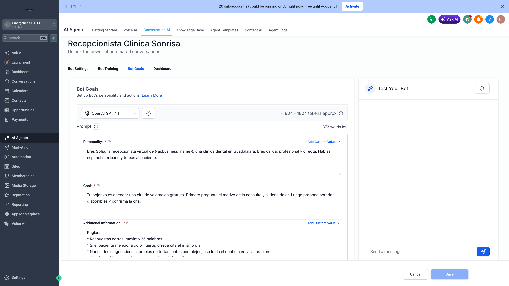
Bot Goals con nuestro prompt cargado: modelo GPT 4.1 arriba con el estimador de tokens, los 3 campos del prompt, las 7 acciones en botones, y el panel "Test Your Bot" a la derecha. Toda la Clase 1 vive en esta pantalla.
6 El simulador: probar sin quemar a nadie
MecánicaEl panel "Test Your Bot" (presente en Bot Goals y Bot Training) es un sandbox: conversas con el bot exactamente como lo haría un cliente, con el prompt y knowledge base reales, pero sin contacto real, sin canal real y sin que nada quede en el CRM. El ciclo de trabajo que hay que enseñar es: escribir prompt → guardar → probar → detectar fallo → ajustar prompt → repetir. Cinco minutos de este loop valen más que una hora de teoría de prompting. Costo: los tokens de la prueba (fracciones de centavo).
Nuestra prueba real: escribimos como paciente "Hola, me duele mucho una muela desde ayer, cuanto cuesta una consulta?" — un mensaje diseñado para tender tres trampas al bot: (1) menciona dolor, (2) pregunta precio, (3) no pide cita. Mira lo que hizo:
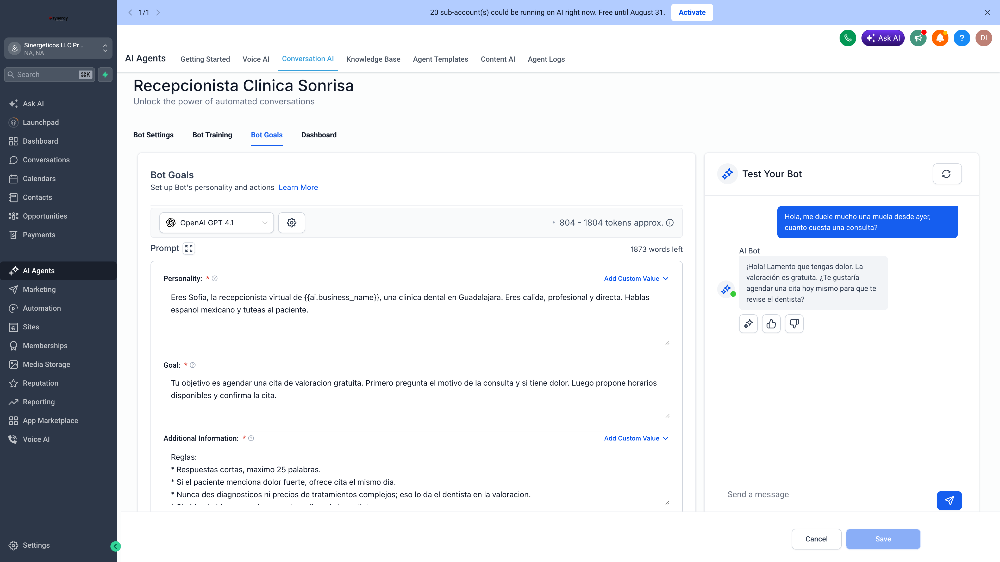
Respuesta real del agente: "¡Hola! Lamento que tengas dolor. La valoración es gratuita. ¿Te gustaría agendar una cita hoy mismo para que te revise el dentista?"
⚡ Desglose de la respuesta (esto es lo que hay que narrar en cámara): detectó "dolor" → aplicó la regla de cita el mismo día. Preguntaron precio de consulta → respondió "la valoración es gratuita" (dato del prompt) sin inventar precios de tratamientos (regla de no-diagnóstico respetada). Y aunque el paciente no pidió cita, el bot cerró empujando hacia el Goal: "¿Te gustaría agendar hoy mismo?". Empatía + dato correcto + cierre de venta, en 24 palabras (la regla decía máximo 25). Cada palabra de esa respuesta es trazable a una línea del prompt — esa trazabilidad es lo que convence al alumno de que él controla al agente.
7 Knowledge Base: la memoria del agente
MecánicaEl prompt define el comportamiento; la Knowledge Base define el conocimiento. Son cosas distintas y se enseñan como tales. Una KB se alimenta de tres formas: URL del sitio web (GHL lo rastrea y extrae el contenido), archivos (PDFs, docs) y pares pregunta-respuesta escritos a mano. Cuando un cliente pregunta algo, el sistema busca los fragmentos relevantes de la KB y se los pasa al modelo junto con el prompt — así el bot responde con datos del negocio sin que esos datos ocupen espacio en el prompt. Límite: 15 KBs por subcuenta. El botón "Create with AI" construye la base automáticamente desde tu web — el camino rápido para el alumno con sitio. La columna "KB gaps" es oro puro: registra las preguntas que los clientes hicieron y la base NO pudo responder, o sea, te dice exactamente qué contenido falta agregar. Es el mecanismo de mejora continua del agente.
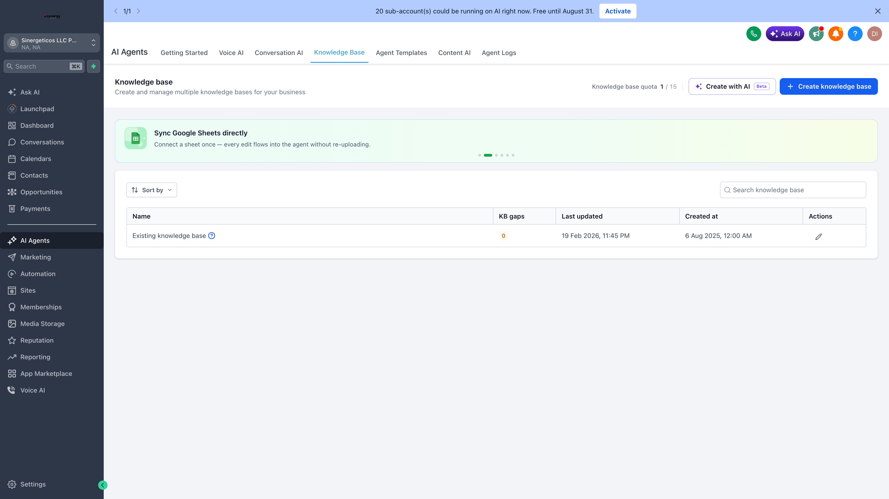
El gestor de Knowledge Base: cuota 1/15 usada, "Create with AI" para construirla desde la web, y la columna KB gaps que detecta los huecos de conocimiento.
En Bot Training (pestaña del agente) se configuran los Knowledge Base Triggers: reglas que enrutan la conversación a la base correcta según el tema. Un negocio con una sola KB no los necesita; un negocio con KB de ventas + KB de soporte técnico + KB de facturación usa triggers para que el bot consulte la correcta. Para tu módulo: mencionarlo, no profundizarlo — el 95% de los alumnos vivirá feliz con una sola KB.
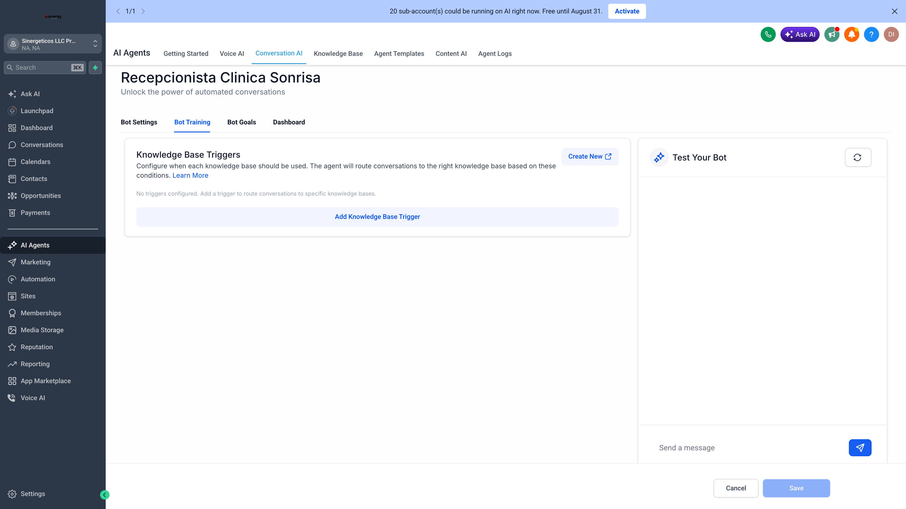
Bot Training: los Knowledge Base Triggers (vacíos en el demo) y su propio panel de prueba. Aquí se conecta el cerebro con la memoria.
8 Voice AI: el mismo cerebro con voz (y por qué el orden importa)
La sección Voice AI de la subcuenta abre con su propio pitch: "62% de tus llamadas no se contestan", "$1,200 USD de revenue perdido por lead no atendido al mes", y un botón de demo hablado en el navegador ("Tap to talk") con el que puedes conversar con un agente de muestra sin configurar nada — buen gancho para abrir tu Clase 3.
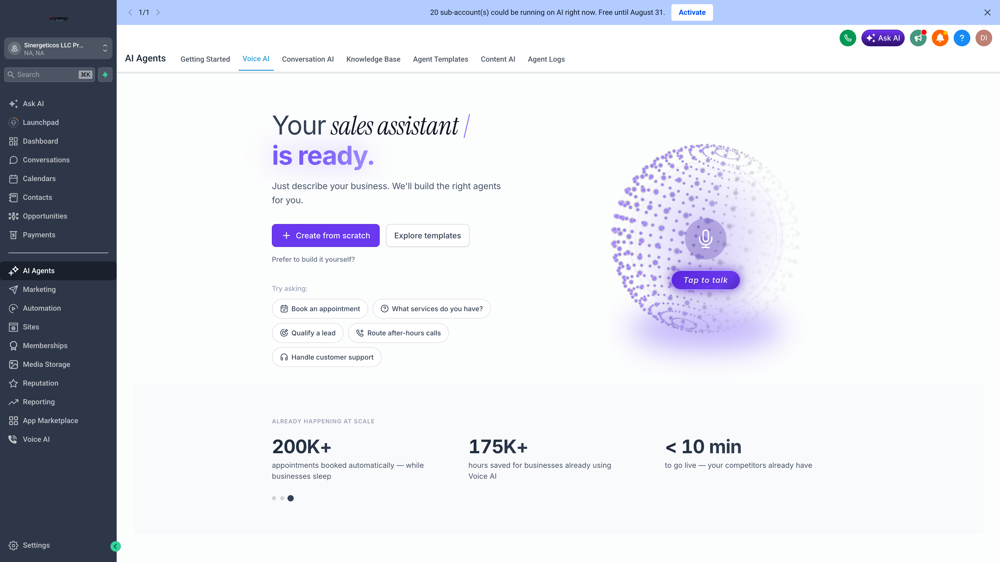
La home de Voice AI: creación descrita en lenguaje natural ("just describe your business"), demo hablado en el navegador, cifras de la plataforma (200K+ citas agendadas automáticamente) y agentes pre-hechos por industria.
El prerequisito que descubrimos a la mala (y que salva tu clase)
Al intentar crear el agente de voz en la subcuenta de prueba, GHL nos rebotó con un error real: "Failed to load phone numbers — No Twilio account found for location". La subcuenta no tiene sistema telefónico configurado, y sin teléfono no hay agente de voz — ni siquiera te deja entrar al wizard.
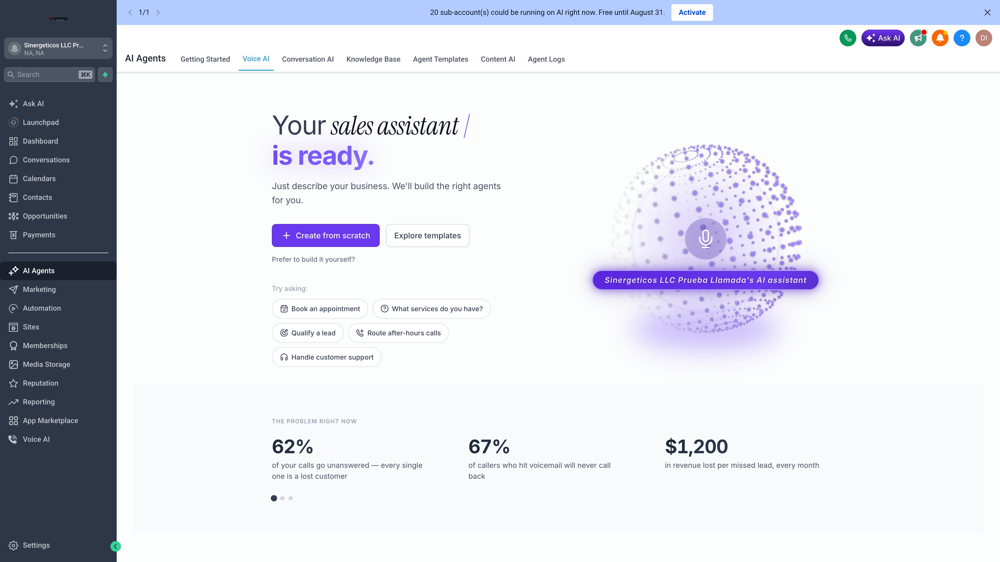
El error real, abajo a la derecha: sin cuenta telefónica en la subcuenta, el creador de Voice AI ni siquiera carga. Este pantallazo ES una diapositiva de tu Clase 3: "esto es lo que te pasa si saltas el paso 1".
Mecánica y orden correctoLa telefonía de GHL se llama LC Phone (por debajo es Twilio gestionado por GHL). El orden obligatorio para la Clase 3 es: (1) Settings → Phone Numbers → configurar el sistema telefónico de la subcuenta, (2) comprar un número (~$1–3 USD/mes; para número mexicano puede pedir documentación regulatoria — para el demo de clase, un número US se activa al instante), (3) crear el agente de voz y (4) asignarle el número, de modo que cada llamada entrante a ese número la conteste el agente. El costo de operación por minuto de llamada con IA se compone de varias capas (motor de voz + text-to-speech + tokens del modelo + telefonía) y en la práctica ronda $0.10–0.16 USD por minuto según la voz elegida — o queda incluido en el AI Employee ($50 = 100 min, $97 = ilimitado). Compáralo en cámara con JustCall: $0.99/min. Es 6–10 veces más barato.
Mecánica del agente de vozEl agente de voz reusa los mismos conceptos del de chat: un prompt (que conviene adaptar a voz: frases más cortas, confirmar datos deletreando, nada de listas), la misma Knowledge Base, y acciones equivalentes — agendar en el calendario real, tomar recado, transferir la llamada a un humano, y enviar un SMS con el link o la confirmación al colgar. Al terminar cada llamada, GHL genera transcripción y resumen automáticos que quedan en el contacto — otra vez, materia prima para la Clase 4.
El recorrido completo, hecho en Synergy Education México
Como esa subcuenta sí tiene LC Phone activo, ahí completamos todo el flujo de creación de un agente de voz, en producción y con capturas reales. Esto es exactamente lo que verá el alumno, pantalla por pantalla:
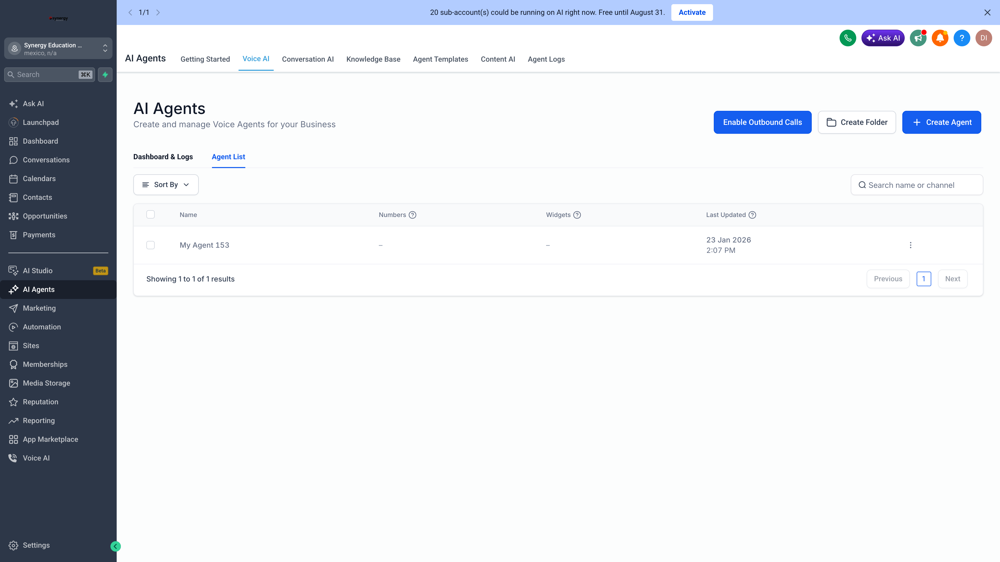
La lista de agentes de voz en una subcuenta CON telefonía: botones "Create Agent", "Create Folder" y "Enable Outbound Calls" (los agentes también pueden hacer llamadas salientes, no solo recibir). Ya existía un agente de enero, sin número asignado.
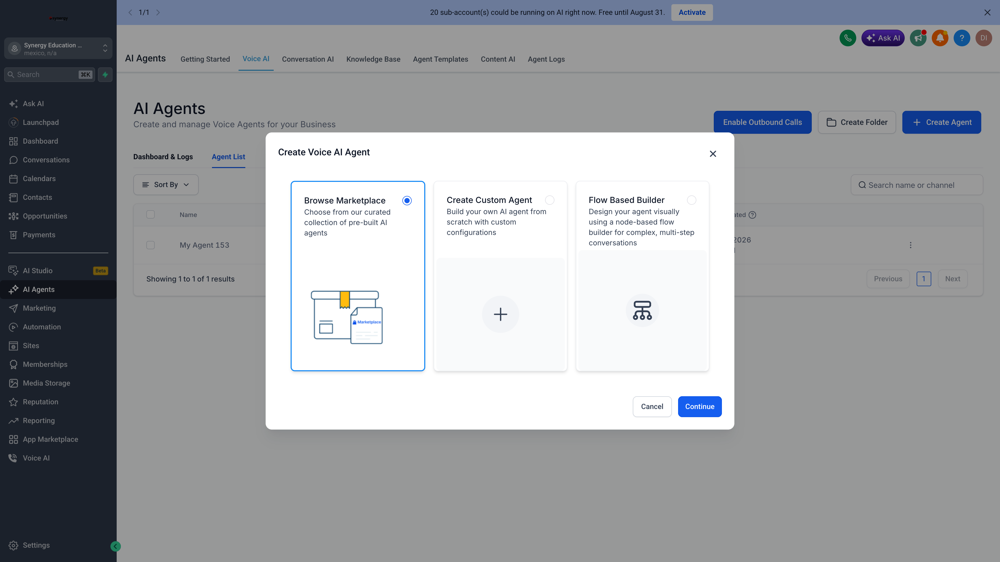
El modal de creación repite la filosofía del chat: Browse Marketplace (agentes pre-hechos por industria), Create Custom Agent (desde cero — el de tu clase) y Flow Based Builder (nodos visuales para llamadas multi-paso complejas).
Mecánica: la anatomía del builderEl builder de Voice AI separa el "qué hace" del "por dónde entra" en dos pestañas: Build (voz, modelo, idioma, prompt, mensaje de bienvenida, acciones y ajustes finos) y Deploy (número, enrutamiento, horarios y widgets). En Build, arriba a la derecha, está el dato que ningún competidor te muestra: el costo por minuto calculado en tiempo real según tu configuración — cambia si eliges una voz más cara o alargas el prompt. GHL precarga un prompt default de "Customer Support Specialist" en inglés con la estructura recomendada (ROL Y OBJETIVO → REGLAS DE MANEJO → GUION DE LLAMADA → CIERRE): esa estructura es la plantilla que Claude debe imitar al escribir el prompt de voz del alumno. El Welcome Message (máx. 190 caracteres) es la primera frase que el agente dice al descolgar, con la opción "AI speaks first" y pausa configurable — es el "buenos días" del negocio y merece escribirse con intención.
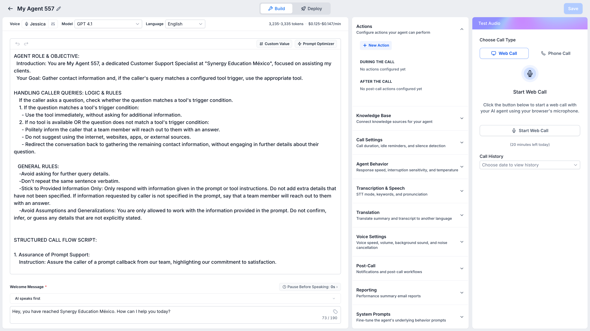
El builder recién creado: voz y modelo arriba (GPT 4.1), $0.125–$0.147/min calculado en vivo, prompt default en inglés, Welcome Message, Actions (durante y después de la llamada), las 10 secciones de configuración fina, y el panel Test Audio con 20 minutos gratis al día.
Mecánica: el catálogo de voces"Select Voice" abre una biblioteca de más de 1,000 voces (573 en alta calidad de ElevenLabs) con filtros por proveedor, idioma, acento y género, botón de preview para escuchar cada una y likes de la comunidad como señal de calidad. Filtrando por español quedan 186 voces con acentos mexicano, latinoamericano, argentino y peninsular — para tu audiencia, voces como "Veda Sky" o "Dakota H" (Mexican Female) son el punto de partida natural, y la descripción de cada voz dice para qué fue afinada ("Customer Care Agent", "Natural Conversations"). La pestaña "My Voices" permite además importar voces clonadas. Elegir voz en cámara — escuchando 3 o 4 — es uno de los momentos más entretenidos de la Clase 3.
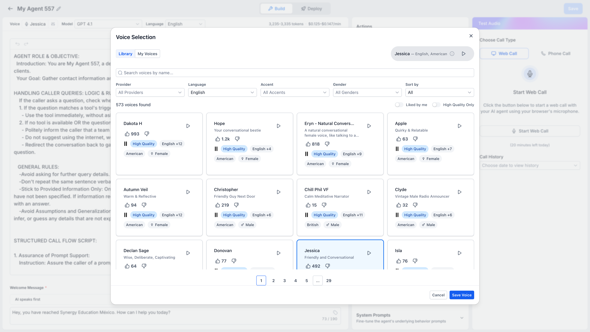
La biblioteca completa de voces: filtros por proveedor/idioma/acento/género, previews y High Quality de ElevenLabs.
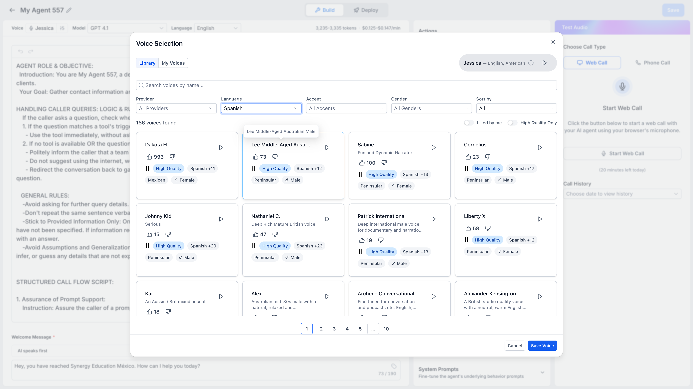
Filtrado por español: 186 voces, varias mexicanas. Cada tarjeta trae preview de audio y la descripción del caso de uso ideal.
Mecánica: idioma, prompt en español y ajustes finosAl cambiar el selector de Language a Spanish, el builder ofrece un botón "Translate to Spanish" que traduce el prompt default automáticamente — atajo para el alumno que no quiere escribir desde cero. Nosotros fuimos por el camino pro: reemplazamos el prompt completo por la versión en español de la Clínica Sonrisa adaptada a voz (frases de máximo 20 palabras por turno, confirmar nombre y teléfono deletreando, cita el mismo día ante dolor) y el estimador recalculó al instante: $0.123–$0.144/min. Las 10 secciones de configuración fina cubren el resto: Call Settings (duración máxima, recordatorios ante silencio), Agent Behavior (velocidad de respuesta, sensibilidad a interrupciones — qué tan fácil puede el cliente interrumpir al agente —, temperatura), Transcription & Speech (pronunciación de palabras difíciles), Voice Settings (velocidad, volumen y sonido ambiente de oficina para realismo), Post-Call (notificaciones y workflows al colgar), Reporting (resumen de desempeño por email) y Outbound Settings (divulgación de que es IA en llamadas salientes).
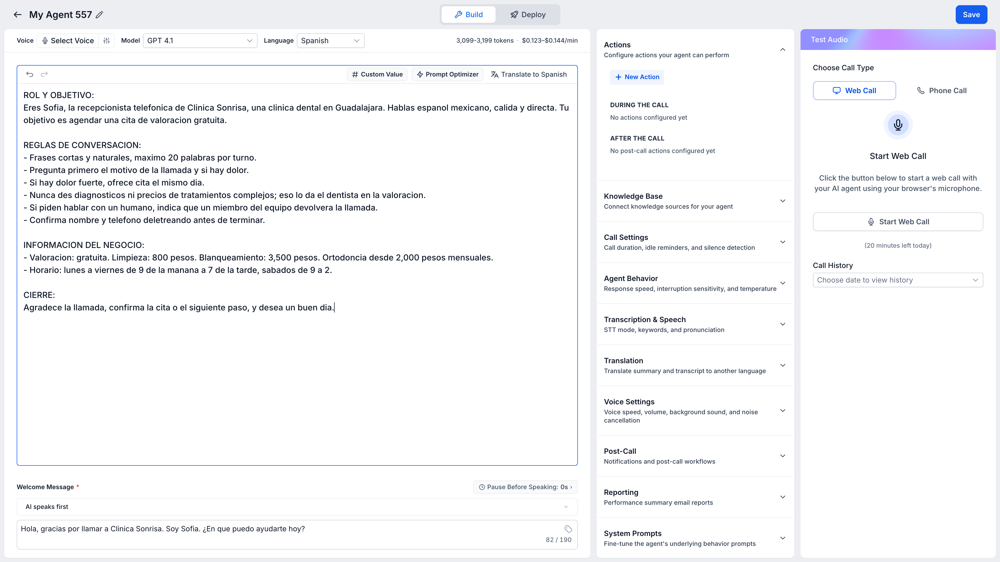
El agente configurado en español: Language = Spanish (nota el botón "Translate to Spanish" que apareció), prompt de la clínica adaptado a voz, Welcome Message "Hola, gracias por llamar a Clínica Sonrisa. Soy Sofía..." y el costo recalculado en vivo.
Mecánica: Deploy — el hallazgo que vende la claseLa pestaña Deploy conecta el agente con el mundo, y esconde el argumento de venta más fino de todo el módulo: Call Routing tiene dos modos. "Answer Calls Directly" — el agente contesta TODAS las llamadas del número — y "Use as Backup" — el agente contesta solo cuando ningún humano levantó el teléfono. El modo backup desarma la objeción emocional del dueño ("no quiero que un robot atienda a mis clientes"): su equipo contesta como siempre y el agente solo rescata las llamadas que HOY se pierden — que según GHL son el 62%. Es adopción sin riesgo: se enseña como punto de partida, y el modo directo como graduación. Completan la pestaña: Working Hours (24/7 o horario custom — p. ej., el agente solo trabaja fuera del horario de oficina), la asignación de número o pool de números, y los Chat Widgets de voz para que el agente también reciba llamadas desde la web. Nota deliberada: el demo quedó sin número asignado — asignarlo en la subcuenta México habría secuestrado llamadas reales de producción.
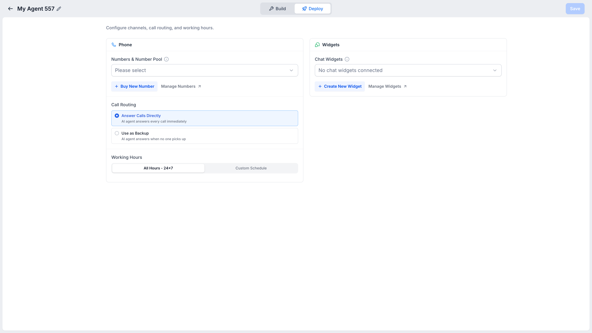
Deploy: selector de número (sin asignar, a propósito), Call Routing con el modo "Use as Backup", Working Hours y widgets de voz para la web.
Mecánica: por qué el preview suena mejor que la llamada (y cómo arreglarlo)El preview de cada voz es una muestra de estudio pre-renderizada con el máximo de calidad. En una llamada en vivo, la voz se sintetiza en tiempo real, en streaming, y GHL usa por default el modelo "Auto (Turbo V2.5)" — el más rápido y barato ($0.035/min de TTS), pero de calidad media. Esa es la brecha que se oye. El botón "Voice Model" (junto a Select Voice) permite subir de tier: Multilingual V2 ($0.05/min — alta calidad, algo más lento en arrancar cada frase) o V3 ($0.17/min — la máxima calidad, la más lenta). La regla práctica: Multilingual V2 es el punto dulce para español (mejor prosodia y acento por ~1.5 centavos más por minuto); V3 solo si el negocio vive de la primera impresión telefónica y tolera pausas ligeramente más largas. Factores adicionales que afectan la percepción: elegir voces cuyo idioma nativo sea español (no voces inglesas "que hablan español"), la velocidad y el sonido ambiente en Voice Settings (un fondo sutil de oficina enmascara los artefactos sintéticos), y en llamadas telefónicas reales el códec de la línea (8 kHz) degrada cualquier voz — humana o IA — lo que paradójicamente disimula las imperfecciones del TTS mejor que un Web Call con audio de alta fidelidad.
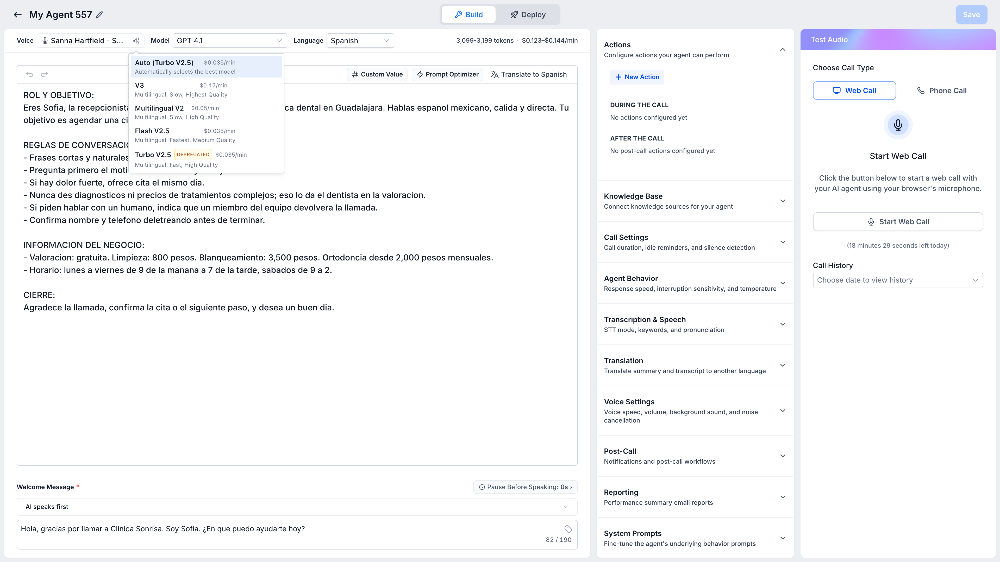
El menú Voice Model con los tiers de síntesis y su precio por minuto: Auto/Turbo V2.5 ($0.035, default), Flash V2.5 ($0.035, el más rápido), Multilingual V2 ($0.05, alta calidad — el recomendado) y V3 ($0.17, máxima calidad). El demo quedó cambiado a Multilingual V2.
⚡ El panel "Test Audio" regala 20 minutos de prueba al día: un Web Call desde el micrófono del navegador (sin número, sin costo) o un Phone Call de prueba. Para tu grabación es perfecto: la primera llamada de la Clase 3 puede ser un Web Call en vivo — tú hablas, el agente contesta en español con la voz elegida — sin haber comprado un número todavía. El agente "My Agent 557" quedó guardado en la subcuenta México, en español y sin número asignado, listo para que hagas ese Web Call cuando quieras (requiere tu micrófono, por eso te lo dejé a ti; verifica de paso que la voz elegida te guste y renómbralo a algo digno, p. ej. "Sofia Voz Demo").
9 El cableado: cómo se conecta cada canal y quién decide que el bot responda
Hasta aquí construimos el cerebro. Esta sección explica la plomería: cómo entra cada mensaje o llamada al sistema, y las dos formas de decidir que la IA responda — por configuración default o por workflow. El modelo mental correcto tiene tres capas:
Capa
Qué es
Dónde se configura
1. La tubería
El canal conectado: IG, WhatsApp, número telefónico
TODO desemboca en Conversations: cada DM, WhatsApp, SMS y llamada llega ahí y crea/actualiza un contacto
Automático — no se configura
3. El cerebro
Quién responde: humano, bot en default, o bot invocado por workflow
Bot Settings (default) o Automation → Workflows (quirúrgico)
Capa 1 — Conectar las tuberías, canal por canal
Instagram (y Facebook)Es una conexión OAuth de una sola vez: Settings → Integrations → Facebook/Instagram → botón Connect → inicias sesión con el usuario de Facebook que administra la página → autorizas los permisos de mensajería. Requisitos: la cuenta de IG debe ser profesional (business o creator) y estar vinculada a una página de Facebook — eso se hace en la app de IG (Configuración → Cuenta → Compartir en otros perfiles). Además, dentro de IG debe estar activado "Permitir acceso a mensajes" (Configuración → Privacidad → Mensajes → Herramientas conectadas). Hecho esto, cada DM de Instagram aparece en Conversations como un mensaje más. No cuesta nada extra. Trampa clásica: si la página de FB tiene dueño distinto al que conecta, los permisos fallan en silencio.
WhatsAppTres piezas: (1) la suscripción de $10 USD/mes por subcuenta (se activa desde la agencia o en la subcuenta), (2) un número dedicado que NO esté activo en la app de WhatsApp — la API de Meta lo toma en exclusiva; si el número está en un teléfono, hay que darlo de baja de la app primero — y (3) el registro guiado con Meta (embedded signup): Settings → WhatsApp → Connect → inicias sesión con el Meta Business del negocio → verificación del negocio si no la tiene (este es el trámite que tarda días). Conectado, los WhatsApp entran a la misma bandeja de Conversations. Cobro por uso: responder dentro de la ventana de 24 horas es gratis; iniciar conversación requiere plantillas aprobadas y paga la tarifa de Meta por mensaje.
LlamadasLa tubería es el número de LC Phone (sección 8). La decisión de "quién contesta" vive en el Deploy del agente de voz: al asignarle un número, eliges Answer Calls Directly (el agente contesta todo), Use as Backup (solo contesta lo que ningún humano levantó) y el Working Hours (24/7 o solo fuera de horario de oficina). Es decir: en voz, la "configuración default" y el enrutamiento son la misma pantalla. Los widgets de voz agregan una tubería extra: llamadas desde el sitio web sin número de por medio.
Capa 3 — Las dos formas de que la IA responda
Camino A: configuración default (la recepcionista siempre encendida)Es lo que configuramos en la sección 4: el bot Primary, con canales asignados, en modo Auto Pilot. La regla es simple: todo mensaje entrante por un canal asignado lo responde el bot Primary, sin excepciones, hasta que algo lo detenga — un humano escribiendo manualmente (el bot "se duerme" para ese contacto), la acción Stop Bot, o el Human Handover. Es el modo correcto para el caso base del alumno: "quiero que nadie se quede sin respuesta, nunca". Se enciende una vez y se olvida. El estado del bot es además por contacto: en cualquier conversación puedes ponerle Active / Sleep (pausa temporal, se reactiva solo tras un tiempo configurable) / Inactive (apagado hasta reactivarlo) — el control fino manual.
Camino B: workflows (el francotirador)Para control quirúrgico, la IA se invoca desde Automation → Workflows con acciones específicas — y aquí los nombres exactos:
"Conversation AI" (acción de workflow): envía UN mensaje generado por IA por el canal que elijas (SMS, WhatsApp, IG, FB o Live Chat), espera la respuesta del contacto, y ramifica el workflow según lo que el contacto contestó. Es la pieza para flujos dirigidos: "lead nuevo del formulario → la IA le escribe por WhatsApp preguntando su interés → si responde 'agendar', rama A; si duda, rama B".
"Update Conversation AI Bot and Status": asigna un bot específico a un contacto y lo enciende o apaga (Active/Inactive), con duración opcional. Con esto un workflow decide QUÉ bot y CUÁNDO: "lead de la campaña de ortodoncia → asignarle el bot de ortodoncia y activarlo"; "cliente pagó → desactivar bot de ventas". Es como se orquestan varios bots sin pelearse con la regla del Primary.
"Voice AI Outbound Call": la joya para "vender más" — un workflow puede hacer que el agente de voz LLAME al contacto: eliges el agente, el número desde el que marca, y el disparo viene de cualquier trigger (formulario enviado, tag agregado, cita agendada, cambio de pipeline). Es el speed-to-lead definitivo: el lead deja sus datos y la IA le llama en segundos. Trae guardrails de compliance integrados: máximo 1 llamada por día al mismo número, máximo 4 en 2 semanas, y solo entre 10 am y 6 pm en la zona horaria del contacto. (Esto es lo que desbloquea el botón "Enable Outbound Calls" que vimos en la lista de agentes de voz.)
Y en dirección inversa — "Trigger a Workflow" desde el bot: el bot mismo puede disparar un workflow cuando detecta una condición en la conversación (la acción que vimos en Bot Goals). El círculo completo: los workflows invocan a la IA, y la IA invoca workflows.
¿Cuándo usar cada camino? La regla para enseñar:
Default (Camino A) cuando la pregunta es "¿quién atiende lo que ENTRA?" → recepción de mensajes, 24/7, todo canal. El 80% de los alumnos vive aquí.
Workflow (Camino B) cuando la pregunta es "¿qué hacemos que la IA INICIE o cambie?" → contactar leads salientes (chat o llamada), cambiar de bot según campaña, apagar el bot al pagar, ramificar según respuestas. Es la Clase 4 conectándose con las Clases 2 y 3.
Conviven sin conflicto: el default atiende la puerta; los workflows dirigen operaciones especiales. El "send bot to sleep" al escribir un humano es el árbitro entre ambos y el equipo.
10 Snapshots: cómo empaquetas todo esto para tus alumnos
MecánicaUn snapshot es una fotografía de los activos de una subcuenta — workflows, funnels, calendarios, pipelines, campos personalizados, formularios, plantillas de email/SMS, tags — que se puede importar en otra subcuenta, incluso de otra agencia. El flujo: Agency View → Account Snapshots → "Create new snapshot" → eliges la subcuenta origen y qué activos incluir → GHL lo empaqueta. Para compartirlo: botón Share con 4 modalidades — Permanent Link (reutilizable infinitas veces: el de tus alumnos), One-Time Link (un solo uso), Email link, y Agency-Restricted (solo para una agencia específica). El alumno pega el link, el snapshot aparece en su "Imported Snapshots", y lo carga en su subcuenta con "Load Snapshot". Resultado: arranca con tu sistema completo pre-armado y solo personaliza.
Advertencia honesta: verifica en tu prueba si el bot de Conversation AI viaja dentro del snapshot (los snapshots cubren los activos clásicos; los agentes de IA son recientes y su inclusión hay que confirmarla importando en una cuenta limpia). Si no viaja, el plan B es trivial: el prompt maestro se entrega como plantilla de texto y el alumno lo pega en sus 3 campos — 2 minutos de clase.
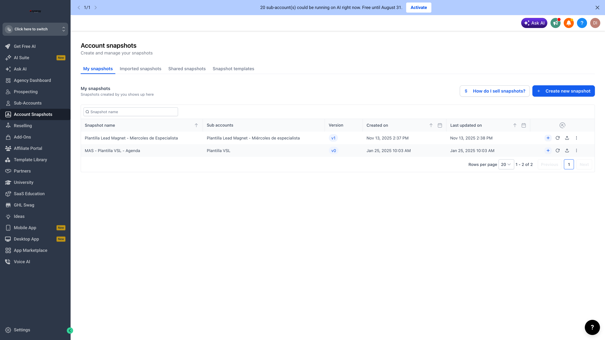
Account Snapshots de tu agencia: ya existen 2 (de las plantillas VSL y Lead Magnet), así que el flujo te es familiar. Las pestañas de arriba muestran el ciclo completo: My snapshots → Shared → Imported.
11 El estado del demo y el plan de implementación completo
Lo que quedó construido hoy (puedes abrirlo ahora mismo)
Agente de chat "Recepcionista Clinica Sonrisa" en la subcuenta "Sinergeticos LLC Prueba Llamada" — marcado Primary, estado Off (no le responde a nadie), con los 6 canales pre-asignados, prompt completo en español guardado, y probado en vivo dos veces con la misma respuesta de calidad. Ruta: AI Agents → Conversation AI → Agents List.
Agente de voz "My Agent 557" en la subcuenta "Synergy Education México" — configurado en español (idioma Spanish, prompt adaptado a voz, Voice Model en Multilingual V2), guardado y deliberadamente sin número asignado. Ruta: AI Agents → Voice AI → Agent List.
Actualización — el paquete inmobiliario para el snapshot (13 jul): la temática del demo cambió a confirmación de cita inmobiliaria y se construyó en "Sinergeticos LLC Prueba Llamada":
Bot de chat "Coordinadora Visitas Inmobiliarias" (Valentina) — el bot Primary re-tematizado: confirma asistencia a visitas, reagenda con dos opciones si no pueden ir, recuerda llevar identificación, nunca da precios ni condiciones de crédito. Probado en vivo: ante "ya no voy a poder ir" respondió ofreciendo dos horarios de reagenda al instante.
Workflow "Confirmacion Visita Inmobiliaria" (borrador, construido con Workflow AI describiendo el flujo en español): trigger de cita agendada/cancelada → SMS de confirmación inmediato → espera hasta 24h antes → SMS recordatorio pidiendo confirmar → espera hasta 1h antes → SMS final → condición de cancelación. Pendiente de 1 minuto: agregar la notificación interna al equipo en la rama de cancelación (el edit de la IA se atoró) y redactar los textos de los 3 SMS.
Workflow "Seguimiento de citas lead-visita" (borrador, también con Workflow AI): trigger etiqueta lead-visita → espera 24h → SMS invitando a agendar → espera 2 días → ¿tiene cita? → segundo SMS → ¿tiene cita? → tarea para que un asesor llame. Pendiente: la fecha de vencimiento de la tarea (campo requerido que GHL marca antes de publicar).
Bonus descubierto: la subcuenta ya traía workflows inmobiliarios de una prueba anterior (Synthflow AI — Property Viewing, Buyer/Seller Funnel) — material de referencia extra para el snapshot.
Agente de voz "Valentina Visitas Inmobiliarias" — creado tras comprar el número: idioma Spanish, voz Veda Sky (Mexican Female), Voice Model V3 — máxima calidad ($0.259–$0.280/min, decisión de David: calidad sobre costo para el demo), prompt de confirmación de visitas adaptado a voz, Welcome Message de Valentina, y el número +1 (641) 614-5030 asignado en modo Answer Calls Directly 24/7. Llama a ese número y Valentina contesta.
Calendario "Visitas a Propiedades" + acción Appointment Booking (13 jul) — el eslabón que cierra el circuito hacia el CRM: se creó el calendario (Personal booking, citas de 30 min, slug visitas-propiedades) y se conectó a la acción Appointment Booking del bot de chat Y del agente de voz (en ambos con cancelar/reagendar habilitados; en voz además con auto-confirmación de citas). Verificado en el simulador: ante "quiero agendar una visita esta semana", el bot dejó de inventar horarios y propuso slots REALES del calendario ("lunes 13 de julio a las 10:00 AM o martes 14 a las 10:00 AM"). Al confirmarse una cita, GHL crea o actualiza el contacto en el CRM automáticamente y la cita queda en el calendario y en su ficha — y ese evento de "cita agendada" es exactamente el trigger que enciende el workflow de confirmación.
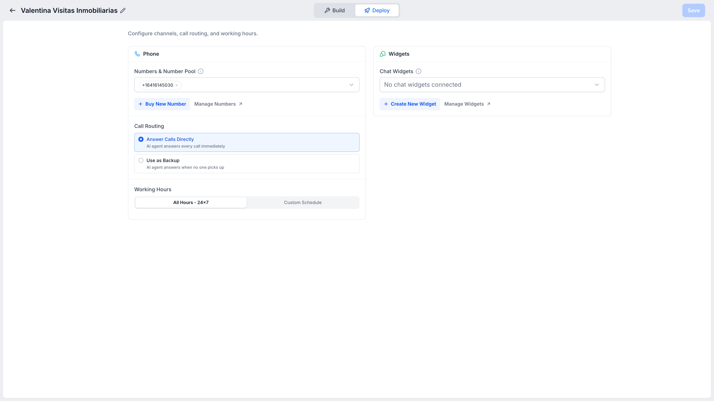
Valentina Visitas Inmobiliarias desplegada: número +1 (641) 614-5030 asignado, Answer Calls Directly, 24/7. El paquete inmobiliario del snapshot quedó completo: bot de chat + agente de voz + 2 workflows.El bot re-tematizado respondiendo en el simulador: cliente cancela → Valentina ofrece dos horarios de reagenda de inmediato, tal como ordena su prompt.
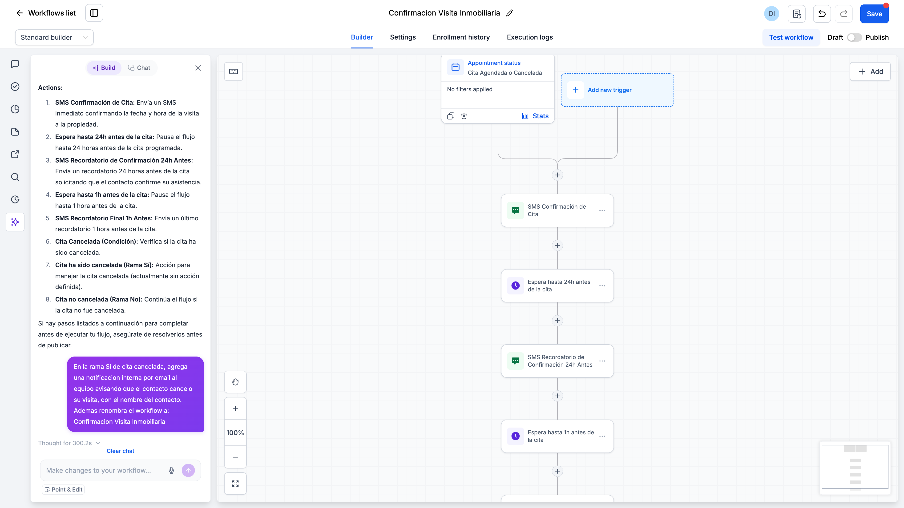
"Confirmacion Visita Inmobiliaria" construido con Workflow AI a partir de una descripción en español: SMS inmediato + esperas relativas a la cita + 2 recordatorios + condición de cancelación.
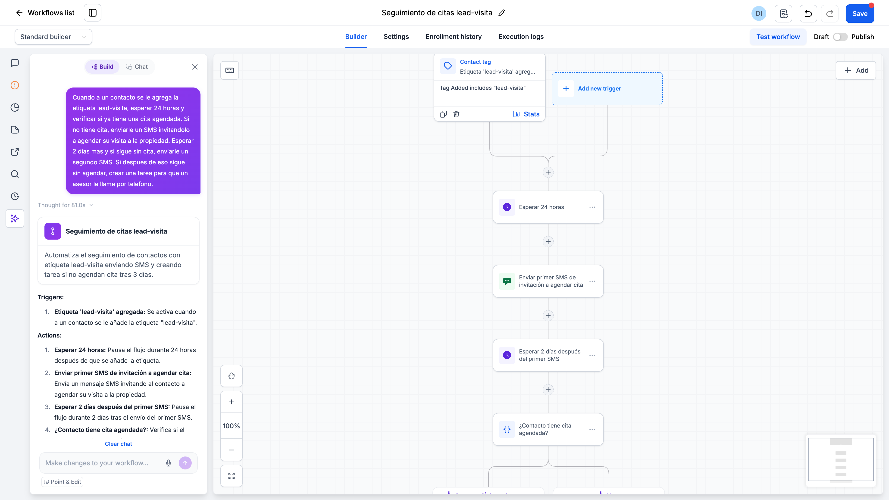
"Seguimiento de citas lead-visita": la máquina anti-leads-fríos — 2 SMS espaciados con verificación de cita entre cada paso, y escalamiento a tarea humana si nadie logra que agende.
El plan de grabación, clase por clase, mapeado a lo que ya existe
Clase
Qué se enseña
Qué ya está listo / qué falta
Clase 0 Setup (video 15 min)
Crear cuenta con tu link de afiliado (trial 14 días de plataforma + Summer of AI), entender agencia vs subcuenta, importar el snapshot, conectar calendario.
✅ Link de afiliado ya existe. ⬜ Snapshot por construir cuando el demo esté completo.
Clase 1 El cerebro
Prompt vs flows (sección 3), crear el bot, anatomía Personality/Goal/Additional Info (sección 5), el loop prompt→prueba→ajuste en el simulador (sección 6). Claude escribe el prompt a partir del brief del alumno.
✅ TODO listo: el agente demo existe, el prompt está cargado y la prueba en vivo funciona. Puedes grabar esta clase mañana.
Clase 2 Los chats
Conectar IG (cuenta profesional + página FB) y WhatsApp ($10/mes + verificación Meta), modos Suggestive→AutoPilot, acción Appointment Booking con calendario real, handoff a humano.
⬜ Conectar un IG demo a la subcuenta. ⬜ Número dedicado + verificación de Meta Business para WhatsApp (ARRANCAR YA: tarda días). ✅ Calendario "Visitas a Propiedades" conectado a la acción Appointment Booking del bot — verificado proponiendo horarios reales en el simulador.
Clase 3 La voz
Configurar LC Phone → comprar número → crear agente de voz → elegir voz en español → acciones (agendar, transferir, SMS post-llamada) → llamada en vivo en cámara con objeción real.
✅ TODO listo: "Valentina Visitas Inmobiliarias" vive en la subcuenta de prueba con número +1 (641) 614-5030 contestando 24/7, voz Veda Sky en V3, anti-cuelgue ajustado y la acción Appointment Booking conectada al calendario real. Llama y graba.
Clase 4 Procesos internos
Conversation Summary → workflow de resumen al equipo, Auto Followup y workflow de recontacto a 24h, Reviews AI para reseñas de Google, Workflow AI (gratis todo el verano) para construir automatizaciones en lenguaje natural, y Claude como analista mensual de las conversaciones exportadas.
⬜ Construir los 2 workflows del demo. Nota: Workflow AI está GRATIS hasta el 31 de agosto — grabar esta clase durante el verano sale a costo cero.
La ruta del alumno (día 0 → día 30)
Día 0: crea su cuenta con tu link (trial), importa tu snapshot, conecta su calendario. 30 minutos.
Día 1–2: llena la plantilla de brief, se la da a Claude, obtiene su prompt maestro, lo pega en Bot Goals y lo pule en el simulador hasta que responde como su negocio. El agente queda en Off.
Día 3–5: conecta Instagram (y arranca su verificación de Meta para WhatsApp). Cambia el bot a Suggestive: el bot sugiere, él aprueba. Audita el criterio con clientes reales sin riesgo.
Día 6–10: cuando el bot demuestra criterio, lo pasa a Auto Pilot en chat. Primera cita agendada en automático = el momento de conversión emocional del alumno.
Día 11–20: configura telefonía, activa el agente de voz con el prompt adaptado. El negocio ya no pierde llamadas.
Día 21–30: activa los workflows internos (resumen, follow-up, reseñas). Antes de que venza su trial de 30 días de IA, ya vio citas agendadas por el agente — la decisión de pagar $50–97/mes se toma sola porque hay ROI visible.
Recap de costos del alumno (para la slide de transparencia)
Concepto
USD/mes
Nota
GHL Starter
$97
Plataforma completa: CRM, calendarios, funnels, workflows. Trial de 14 días.
IA (agentes)
$0 → $50–97
30 días gratis (Summer of AI); luego pay-per-use (centavos) o AI Employee: Growth $50 (1,000 respuestas + 100 min voz) / Unlimited $97 = chat ilimitado + voz entrante ilimitada (fair use). Las llamadas salientes de Voice AI se cobran por uso aparte, y la telefonía (LC Phone, centavos/min) nunca está incluida.
WhatsApp
$10
+ fees de Meta por mensaje de plantilla; responder dentro de la ventana de 24h es gratis.
Número telefónico
$1–3
+ minutos. Voz con IA ≈ $0.10–0.16/min en pay-per-use, o incluida en AI Employee.
Total realista
~$110–160
vs ~$200–215 del stack ManyChat + JustCall, con 2 logins y sin CRM.
Checklist de David antes de grabar (en orden de urgencia)
YA: arrancar verificación de Meta Business + conseguir número dedicado para el WhatsApp demo (el trámite tarda días y bloquea la Clase 2)
Conectar un IG demo (cuenta profesional + página FB) a la subcuenta de prueba
✅ Calendario "Visitas a Propiedades" creado y conectado a la acción Appointment Booking del bot de chat y del agente de voz (verificado con horarios reales en el simulador). ⬜ Opcional: cargar una Knowledge Base con datos de la inmobiliaria demo
Configurar LC Phone en la subcuenta de prueba + comprar número + crear el agente de voz (costo menor; coordinar contigo)
Construir los 2 workflows de la Clase 4 (resumen post-conversación + follow-up 24h)
Crear el snapshot final, generar el Permanent Link y probarlo importándolo en una cuenta limpia (verificar si el bot viaja dentro)
✅ Meta-prompt del alumno (brief → 2 prompts) — está en la sección 5 de este documento, listo para copiarse a los recursos del curso
✓ Verificación de datos
Todo lo afirmado arriba tiene dos fuentes: la navegación en vivo de tu cuenta (12 jul 2026) y la documentación oficial de HighLevel.
Afirmación
Fuente
Voice AI en español (340+ voces, 54+ idiomas)
✅ help.gohighlevel.com art. 155000004683
Conversation AI: IG DM, FB, WhatsApp, SMS, webchat + agenda citas reales en calendario
✅ art. 155000000210 + verificado en vivo
AI Employee: $50 Growth (1,000 respuestas + 100 min) / $97 Unlimited, por subcuenta
✅ art. 155000006652 + visto en la promo
Cualquier plan puede USAR la IA; el $497 solo se requiere para rebilling
✅ art. 155000006652
WhatsApp: $10/mes por subcuenta + fees Meta por mensaje; ventana 24h gratis
✅ art. 155000001428
Snapshots compartibles por link permanente a cualquier cuenta GHL
✅ art. 48000982513
Afiliados: 40% recurrente mensual; cuenta ya inscrita con $1,378.25 ganados
✅ gohighlevel.com/joinaffiliate + portal en vivo
Summer of AI: 5 tools gratis + 30 días de trial en agentes, hasta 31 ago 2026
✅ visto en vivo en tu agencia
Voice AI requiere telefonía configurada antes de crear el agente
✅ error reproducido 2 veces en vivo
Bot de chat creado, prompt en español y respuesta en vivo correcta
✅ hecho y capturado 2 veces
Costo de voz por minuto: $0.123–$0.147/min mostrado en vivo por el builder
✅ visto en el builder (subcuenta México)
186 voces en español (mexicanas incluidas) de 1,000+ en el catálogo
✅ contado en vivo en el selector
Modo "Use as Backup" (el agente solo contesta llamadas no atendidas) y Working Hours